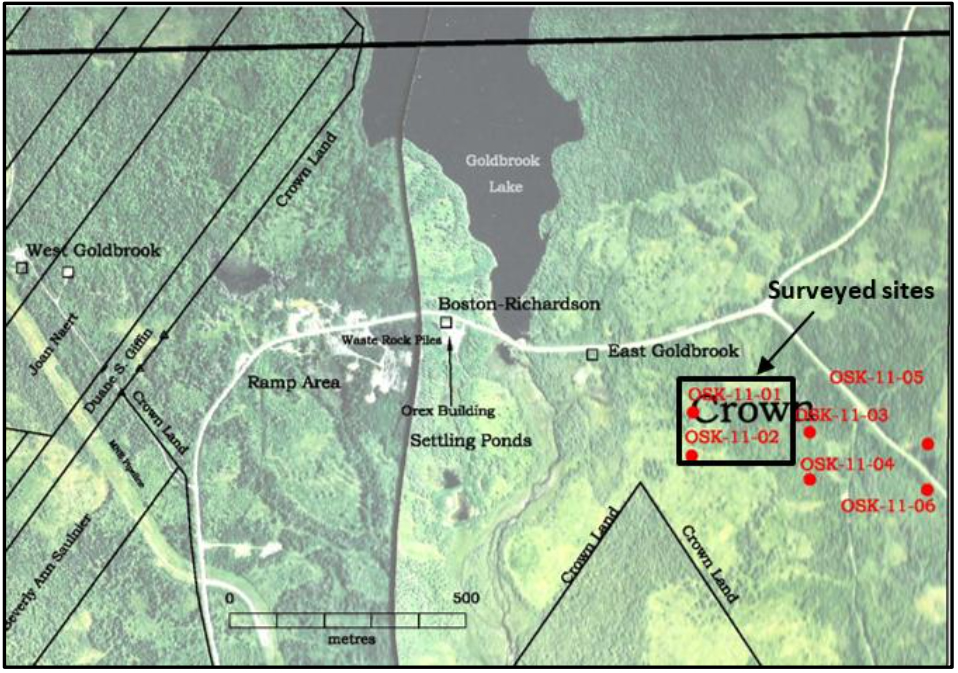
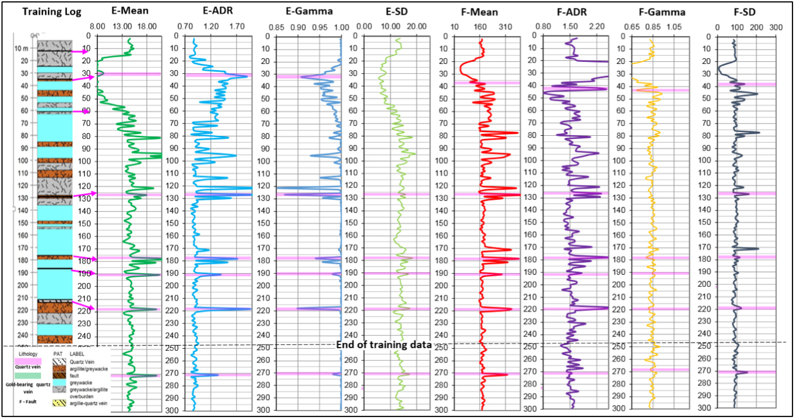
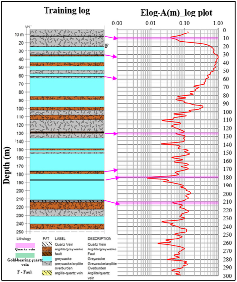
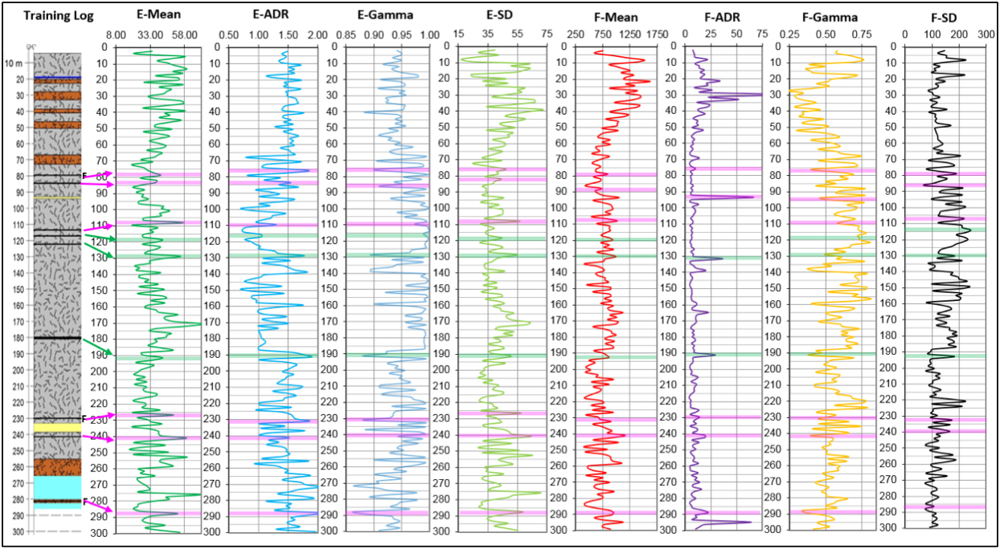
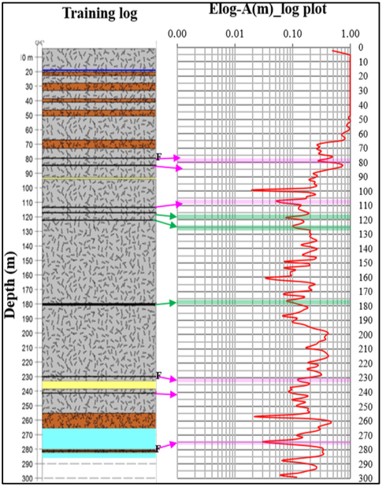
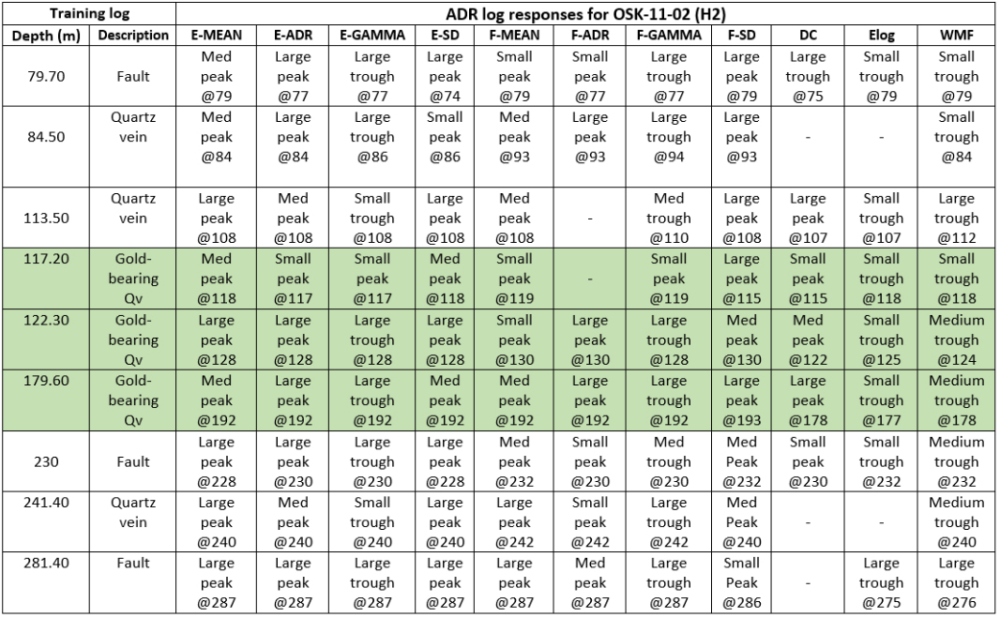
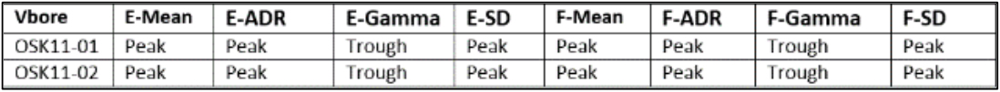

Use of Atomic Dielectric Resonance (ADR) technique to identify quartz veins in the subsurface - A case study from Goldboro, Nova Scotia
Project Aims
The main aim of the project is to determine the ability of the ADR technique to identify quartz veins within the background rock in Goldboro, Nova Scotia, which may or may not be gold- bearing. To accomplish this aim, drilling data from the two sites (training data) provided by Orex Exploration were used to train the ADR tool. The main questions to be answered are (1) can the tool identify quartz veins; (2) can the tool identify changes in lithologies; (3) are the results reasonably repeatable.
Geological Context
Goldboro is located along the northeastern shore of Nova Scotia, Canada approximately 16 kilometres west of the shire town of Guybourough within Latitude 45°12’2.87”N and Longitude 61°37’55.36”W (Figure 1).
 Figure 1. Location of case study area.Gold was first discovered in 1861 within quartz veins in the area on the Isaac’s Harbour anticline. Three decades after (1892), gold was discovered within shale and quartz in the shale belt by Howard Richardson, which led to active exploration and commercial mining (Orex website). Orex acquired the area in the late 90’s and in 2004, they commenced very active and extensive exploration of gold in the area and surrounding areas, which is still on-going (Wikipedia & Orex website).
Goldboro is underlained by sedimentary rocks of the Goldenville Group, which consists of alternating layers of greywacke, arenaceous sandstone and slates. Goldboro is characterized by gold mineralization filled in narrow quartz veins. According to Orex, four main mineralized bodies are identified within the Goldboro area; namely: The Main Richardson, East Goldbrook and West Goldbrook (Figure 1). This gold mineralization has increased the interest of Orex to carry our additional exploration to identify more deposits of gold in the area.
Results
Results from analysis and interpretation of ADR survey of two sites, OSK11-01 (H1) and OSK11-02 (H2) in Goldboro, Nova Scotia indicates that the ADR technique is able to identify quartz veins, some of which are gold- bearing. The quartz veins are hosted within greywacke argillite, which forms the major background rock type in the area. The gold occurs within these quartz veins and encountered only in OSK11-02 (H2). Responses from the logs match reasonably with the training data provided by the client and this is observed across the logs from both virtual boreholes (Figure 2). However, there is no distinct difference observed between the signatures of the gold-bearing and the non- gold bearing quartz veins.
OSK-11-01 (H1)
 Figure 2. Energy and Frequency Harmonic logs in OSk11-01 (H1) showing anomalous responses (peaks and troughs) that correspond to known quartz veins.Harmonic energy and frequency logs show some very distinct peak and trough responses at specific intervals (Figure 2). Strong peaks in E-Mean, E-ADR, F-Mean, F-ADR, F-SD match and strong troughs in E-Gamma match with known quartz veins. These responses are very strong and anomalous compared to background signatures.
Analysing the energy log (Elog) against known quartz veins also revealed encouraging results (Figure 3). Some of the quartz veins can be matched with responses on the Elog as a slight reduction in the energy values, although the responses vary throughout the hole. It is unclear what is responsible for these variations. For instance, a significant peak response produced at 181m on the Elog can be matched with quartz vein at 186.80m, while at 128m the quartz vein produces only a small trough response on the Elog. Nevertheless, the known quartz veins correlate with reduction in energy values on the Elog.
 Figure 3. Some of the known quartz veins can be matched with drop in the Elog in OSK-11-01 (H1).OSK-11-02 (H2)
 Figure 4. Energy and Frequency Harmonic logs in OSK11-02 (H2) showing anomalous responses (peaks and troughs) that correspond to known quartz veins. Gold-bearing quartz veins are shown in light green and non-gold bearing quartz veins in pink.Results from the second site, OSK-11-02 (H2) is consistent with those discussed above for OSK- 11-01 (H1). Strong peaks in E-Mean, E-ADR, E- SD, F-ADR, F Mean and F-SD; and strong troughs in E-Gamma and F-Gamma match with quartz veins (Figure 4). Some matches are more unique than others but a consistent pattern can be seen across the logs and same responses are observed in OSK-11-01 (H1). For this hole, training information shows that some of the quartz veins are gold-bearing unlike those encountered in H1. The energy and frequency harmonic log responses for gold-bearing quartz veins are coloured in light green to distinguish them from the non-gold bearing quartz veins in light pink, however, this was based mainly on the information from the training data (Figure 4).
Energy log for H2 also show some interesting matches with the training log at quartz vein intervals (Figure 5). As observed in OSK-11-01 (H1), reduction in the Energy log (Elog) can be matched with known quartz veins and at similar intervals, the WMF log produces notable trough signatures. The lowest response on the Elog at 100m does not correlate to quartz vein or any significant rock type based on the data available. This significant reduction in the Elog could be due to log artefact or quartz vein/other rock type not identified by the training log based on the data available.
Some of the log responses for both OSK-11-01 (H1) and OSK-11-02 (H2) are off by a few metres and some strong peaks and troughs cannot be matched to quartz veins or any significant rock type based on the training data provided by Orex. It is unclear from the data and processing carried out why some of these responses do not match with quartz veins. Two possible explanations include: (1) responses represent other quartz veins or rock type not identified by the training log (2) responses are false and therefore do not match to any quartz veins or significant rock type. However, most of the strong signatures on the energy and frequency match with known quartz veins
 Figure 5. Some of the known quartz veins (including the gold-bearing ones) can be matched with drop in the Elog in OSK-11-02 (H2).Table 1 shows energy and frequency harmonic log comparison between their depths and depths of known quartz veins from training data for OSK-11-02 (H2).
 Table 1. ADR log responses and comparison between their depths and depths of quartz veins from training data for OSK-11-02 (H2). Depths between the training and ADR data are sometimes off by a few metres. Gold-bearing quartz veins highlighted in light green.Client Benefits
ADR technique by Adrok showed that quartz veins can be identified in the subsurface in Goldboro, Nova Scotia. Some of the quartz veins have undergone gold mineralization. Application of the ADR technique can therefore provide the client, Orex with alternative method of exploration in the area that is cheaper, quicker and very environmental friendly.
Conclusions
Frequency, energy harmonic logs and Elogs produced good responses, which could be matched to quartz veins some of which are gold bearing. The quartz veins are hosted within greywacke argillite, which forms the main background rock type in the area. OSK- 11-01 (H1) did not encounter any gold-bearing quartz veins while OSK-11-01 (H2) encountered thin intervals of gold-bearing quartz veins at 117.20m, 122.30 and 179.60m as shown in table 1. Although the tool does not distinguish between the gold-bearing quartz veins and the non-gold bearing quartz, the results from both virtual boreholes are very consistent and repeatable (Table 2). Result is encouraging and increases confidence in the ADR technique’s ability to uniquely identify rock types and depth at which they occur. Depths could be off by a few metres and this could be attributed to positioning of the ADR tool during acquisition.
Project was limited to only two sites and it might be worth deploying the technique on more Orex sites to establish broader matches between the logs and training data.
Acknowledgments
Adrok wishes to thank Orex Exploration for providing the training data and the assistance of the Orex personnel who contributed to the field work and project.
 Table 2. Summary table showing consistency in energy and frequency harmonic log responses in OSK-11-01 (H1) and OSK-11-02 (H2).